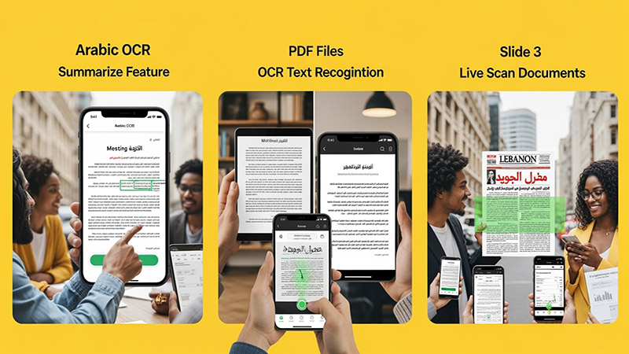
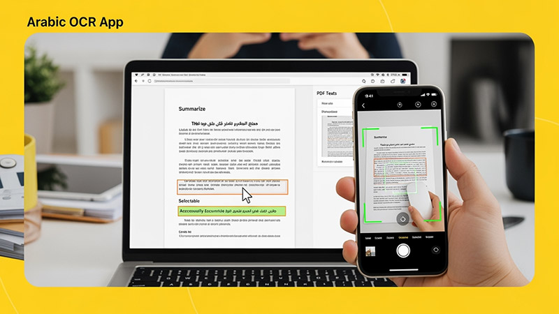
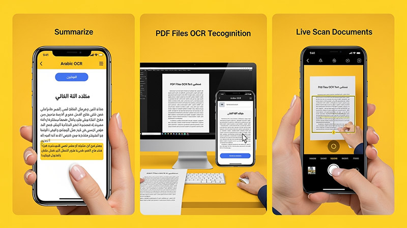
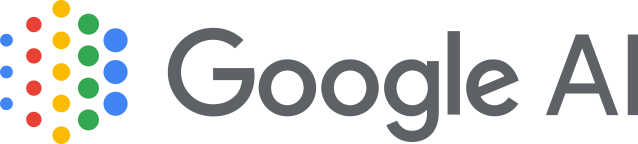

Scan documents, handwriting, or images and convert them into editable Arabic text using advanced AI. Try the free online demo below or download the app for full access on iOS, Android, macOS, and Windows.
يتعرف بدقة على النص العربي المطبوع والكتابة اليدوية من الصور أو ملفات PDF أو المستندات الورقية.



Upload an image, try your handwriting, or drop a file here to extract Arabic
text instantly.
(For full results & PDF support, download the app
below)
Click or Drag Image Here
Supports JPG, PNG - Try Handwriting!
(For PDF Files, please download the App)
Processing... / جاري المعالجة
Subscribe to Web Portal or Download App for unlimited access & PDF support!
Use advanced Arabic OCR to scan images, PDFs, and handwriting with high precision.
Perfect for students, professionals, journalists, and researchers.
Experience unmatched precision in detecting and extracting Arabic handwriting. Our advanced AI models are trained to recognize various styles of scripts, from student notes to historical manuscripts, converting them into digital text instantly.
اكتشف قوة الذكاء الاصطناعي في التعرف على الخط العربي اليدوي واستخراجه بدقة مذهلة. تم تدريب نماذجنا المتقدمة لمعالجة مختلف أنماط الكتابة، من ملاحظات الطلاب إلى المخطوطات التاريخية، وتحويلها إلى نصوص رقمية فوراً.
Try Handwriting DemoNow available for Windows users. The native Windows app runs a local on-device model, so your documents are processed entirely offline — your files are never uploaded and your data never leaves your PC. 100% private, and fast.
متوفر الآن لمستخدمي ويندوز. يعمل التطبيق بـنموذج محلي على جهازك، حيث تتم معالجة مستنداتك بالكامل دون الاتصال بالإنترنت — لا يتم رفع أي ملفات ولا تغادر بياناتك جهازك أبداً. خصوصية ١٠٠٪ وسرعة عالية.
Download for Windows


Designed specifically for the Mac ecosystem. Experience the ultimate privacy and speed with our Apple Local LLM integration. Process your sensitive documents entirely offline, ensuring your data never leaves your device.
مصمم خصيصاً لنظام macOS. استمتع بخصوصية وسرعة لا مثيل لهما مع تكامل Apple Local LLM. قم بمعالجة مستنداتك الحساسة بالكامل دون الاتصال بالإنترنت، مما يضمن عدم مغادرة بياناتك لجهازك أبداً.
Download for macOS

Edit, merge, and organize your PDFs effortlessly with our powerful online studio. No installation required—access advanced tools like page rotation, deletion, and text extraction directly in your browser.
قم بتعديل ودمج وإدارة ملفات PDF الخاصة بك بسهولة عبر الاستوديو المتطور أونلاين. إستمتع بأدوات متقدمة مثل تدوير الصفحات، الحذف، واستخراج النصوص مباشرة من متصفحك دون الحاجة لأي تثبيت.
Open PDF Studio Portalوداعاً للكتابة اليدوية! مع تطبيقنا، يمكنك استخراج النصوص العربية من أي مصدر بضغطة زر واحدة عبر جميع تطبيقاتنا.
دعم كامل للخطوط العربية المطبوعة واليدوية بفضل خوارزميات المعالجة المتقدمة.
معالجة فورية للصور، المستندات الممسوحة ضوئياً، وملفات PDF متعددة الصفحات.
استمتع بتجربة مستخدم سلسة حيث يتم استخراج النصوص وتنسيقها خلال ثوانٍ معدودة.
نظام متطور يفهم سياق الحروف العربية لضمان أعلى مستويات الدقة وتقليل الأخطاء.
Learn how to use Arabic OCR Web Portal in minutes
Watch on dedicated page →This comprehensive tutorial covers everything you need to know about using the Arabic OCR Web Portal, including document scanning, text extraction, AI-powered summarization, and translation features.
Learn how to edit, merge, and manage your PDFs with PDF Studio
Watch on dedicated page →Arabic OCR is now available for Windows users on the Microsoft Store. Install the native Windows app and extract printed and handwritten Arabic text from images and PDFs directly on your PC. It runs a local on-device model, so your files are never uploaded — 100% private and fully offline.
New in v3.7: The iOS and macOS versions now leverage Apple's latest on-device LLM Vision technology. Experience lightning-fast, offline OCR without uploading any files. Your data never leaves your device—100% secure and private.
Version 2.4 introduces AI Summarize for instant summaries of your scanned text, and a Reformat OCR Results feature to automatically clean and organize extracted text. Enjoy faster, smarter, and more accurate Arabic text recognition, both printed and handwritten.
Accurately detects both printed Arabic text and handwritten Arabic script from scanned documents, photos, or PDFs.
Use your phone’s camera to scan paper documents or import Arabic images and PDFs directly from your gallery.
Experience near-instant Arabic text extraction using Google Cloud Vision AI for OCR.
Your scanned files are processed locally or securely in the cloud. No storage, no sharing. 100% privacy-focused.
Designed with a clean, intuitive layout for all users — ideal for students, researchers, and professionals.
أصبح تطبيق Arabic OCR متاحًا الآن لمستخدمي ويندوز على متجر Microsoft. حمّل التطبيق واستخرج النصوص العربية المطبوعة والمكتوبة بخط اليد من الصور وملفات PDF مباشرة على جهاز الكمبيوتر. يعمل التطبيق بـنموذج محلي على جهازك، فلا يتم رفع أي ملفات — خصوصية ١٠٠٪ وبدون إنترنت.
جديد في الإصدار v3.7: نسختي iOS و macOS تستخدمان الآن أحدث تقنيات Apple LLM Vision المدمجة. استمتع باستخراج نصوص فوري و بدون إنترنت، دون الحاجة لرفع أي ملفات. بياناتك تبقى على جهازك—أمان وخصوصية ١٠٠٪.
الإصدار 2.4 يقدم ميزة التلخيص الذكي للحصول على ملخصات فورية للنصوص الممسوحة، وميزة إعادة تنسيق النتائج لتنظيف وتنظيم النصوص المستخرجة تلقائيًا. استمتع بـ استخراج نصوص عربية أسرع وأكثر ذكاءً ودقة، سواء كانت مطبوعة أو مكتوبة يدويًا.
يتعرف بدقة على النص العربي المطبوع والكتابة اليدوية من الصور أو ملفات PDF أو المستندات الورقية.
امسح مستنداتك بالكاميرا أو قم برفع صور عربية أو ملفات PDF لتحويلها إلى نصوص رقمية.
استمتع بـ استخراج نصوص عربية فورية باستخدام تقنية Google Cloud Vision المتقدمة.
تتم معالجة الملفات محليًا أو بشكل آمن في السحابة — لا يتم حفظ أو مشاركة أي بيانات — خصوصيتك مضمونة.
مصمم بواجهة نظيفة وسهلة لكل المستخدمين — مناسب للطلبة والباحثين وكل من يعمل على الوثائق العربية.



This app uses the latest Google Vision API — a powerful AI technology trained on millions of real-world documents — to deliver exceptional OCR accuracy.
Whether it's complex handwriting or low-quality images, Google Vision’s neural networks ensure precise text recognition every time.
Benefit from ongoing improvements in Google’s AI models. As the API evolves, your OCR results get even better — no app update required.
يستخدم هذا التطبيق أحدث إصدار من Google Vision API، وهي تقنية ذكاء اصطناعي قوية تم تدريبها على ملايين المستندات الواقعية لضمان دقة فائقة في التعرف على النصوص.
سواء كانت كتابة يدوية معقدة أو صور بجودة منخفضة، توفر خوارزميات Google نتائج دقيقة في كل مرة.
استمتع بـ تحسينات متواصلة في أداء الذكاء الاصطناعي من Google. مع كل تحديث تقني، تتحسن نتائج التعرف دون الحاجة لتحديث التطبيق.
Discover tips, tutorials, and latest news about Arabic OCR and AI technology.
الأسئلة الشائعة